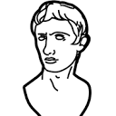
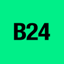

Занятие 7 · поток 6 · 13 октября 2026
Решение перестало
быть догадкой.
Первая половина: глубокое исследование в чатах.
Вторая: ставим себе Дипресёрч в Codex.
Справочная. Один вопрос, один ответ за 10 секунд: цена, адрес, новость, кто выиграл тендер.
Детектив. Сам строит план, читает сотни страниц, сверяет и приносит отчёт со ссылками за 5–30 минут.

 ChatGPT · Добавить файлы и другое
ChatGPT · Добавить файлы и другоеВажную цифру спросите у трёх разных ИИ. Совпали: верим. Разошлись: открываем ссылку и смотрим первоисточник.
Глубокое исследование, отчёт со ссылками.
Значок четырёх шаров → «Исследовать». Законы, суды, госзакупки, местные новости.
Gemini Deep Research ищет по Google. Kimi.ai без VPN. Perplexity сверяет каждый факт с источником.


«Ты бизнес-аналитик в сфере…»
Топ-10, цены цифрами, отзывы
«Не ограничивайся первой страницей»
Таблица и 5 рекомендаций
Ссылка на каждый факт

Перед переговорами, эфиром, выходом на новый рынок. Нет компании: своё имя, конкурент или тот, кому собираетесь платить.
Карты, 2ГИС, отзовики, Telegram, форумы, сайты жалоб.
Как вас видит незнакомый клиент перед встречей.
За что хвалят и ругают, суды и долги, 3 вопроса до оплаты.


Надстройки → «ChatGPT»
своим аккаунтом ChatGPT
объясни формулу, найди ошибку
итоги по месяцам и график
Один отзыв это пациент.
Тридцать это поликлиника.
И у неё есть общий диагноз. 20–30 отзывов с 2ГИС или Яндекс Карт подряд, вставили после промпта, первым читаем раздел «неожиданные инсайты».
Факты со ссылкой на каждый. Кнопка «Проверить источники» сверяет утверждения с первоисточниками: третий врач
perplexity.ai
Загрузили таблицу, получили дашборд и графики без формул
julius.aiТаблица со встроенным ИИ: аномалии и прогнозы прямо в ячейках
rows.comОткуда идёт трафик к сайтам конкурентов
similarweb.com
Упоминания бренда и тональность в реальном времени
brand24.comБаза компаний и контактов ЛПР со скорингом, кто скорее купит
apollo.ioСтатистика любого Telegram-канала: рост, охваты, вовлечённость. Сколько на самом деле читают у конкурента
tgstat.ruДосье на контрагента по ИНН: суды, долги, связи, госконтракты. Rusprofile бесплатно в базе, Фокус платный: focus.kontur.ru
rusprofile.ru
отчёт в Word или PDF
в базу Gem-бота или проекта
Gemini Notebook: пересказ, таблица
раз в месяц то же исследование

порядок исследования
работают сразу
бесплатно на старте
запускает и собирает
в вашей папке
Двенадцать дверей,
сшитых
в один навык.
Глубокое исследование в чате это одна дверь. Здесь вы пишете задачу словами, а навык сам решает, кого послать: поисковик, читалку сайтов, сборщик соцсетей и карт, браузер.

навык одной просьбой
один под все ключи
друг за дружкой
«возьми ключи и подключи»
перезапуск, все двенадцать
 Codex · перезапуск
Codex · перезапуск

Три режима, правило трёх врачей, готовые промпты под ваш рынок.
Таблицы, отзывы, прогноз и план-факт за минуты, а не за вечер.
Дипресёрч в Codex: двенадцать сервисов, шесть из них на ваших ключах.